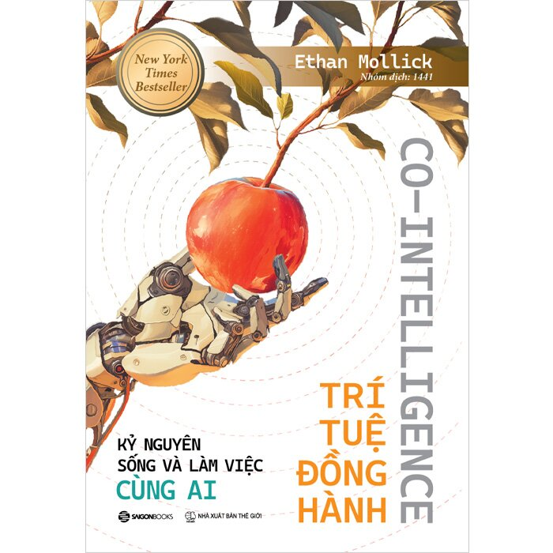

Nguyễn Hoàng Tiểu My [REDACTED] (1)

CẢM NHẬN VỀ CUỐN SÁCH
“ TRÍ TUỆ ĐỒNG HÀNH “
Tác giả: Ethan Mollick
1. Giới thiệu cuốn sách
Trong kỷ nguyên số giáo dục đại học, sự trỗi dậy của các mô hình ngôn ngữ lớn không chỉ dừng lại ở một bước tiến kỹ thuật thuần túy, mà đã châm ngói cho một cuộc tái định hình mang tính bản luận về cách thức con người tư duy, học tập và sáng tạo. Đối với một sinh viên năm thứ ba đang đứng trước ngưỡng cửa nghiên cứu chuyên sâu, việc chứng kiến sự hiện diện dày đặc của công nghệ này trong mọi khâu từ tìm kiếm tư liệu đến hiệu đính văn bản vừa mang lại sự tiện lợi, vừa khơi dậy nỗi hoài nghi sâu sắc về sự suy giảm khả năng tư duy độc lập. Trong bối cảnh ngã ba đường của nhận thức đó, tác phẩm Trí tuệ đồng hành: Kỷ nguyên sống và làm việc cùng AI của Giáo sư Ethan Mollick thuộc Trường Wharton xuất hiện như một tấm bản đồ định hướng lý thuyết và thực tiễn vô cùng giá trị. Cuốn sách không đơn thuần là một cẩm nang hướng dẫn kỹ thuật mà là một tiểu luận triết lý sâu sắc về mối quan hệ cộng sinh giữa con người và máy móc, giúp người học định hình tư duy phản biện cần thiết để bảo vệ tính chủ động trong học thuật của chính mình.
2. Nội dung ấn tượng
Luận điểm cốt lõi và mang tính đột phá nhất mà Ethan Mollick thiết lập trong cuốn sách chính là việc định nghĩa lại bản chất của trí tuệ nhân tạo dưới một hình tượng hoàn toàn mới: xem AI như một dạng trí tuệ người ngoài hành tinh. Sự chuyển dịch định nghĩa này buộc người đọc phải thay đổi hoàn toàn cách tiếp cận, nhận thức được rằng AI hoạt động dựa trên các xác suất thống kê chứ không phải sự thấu hiểu thực sự. Đi kèm với đó là khái niệm biên giới lởm chởm được tác giả dùng để mô tả ranh giới bất định giữa những gì AI có thể làm xuất sắc và những gì nó hoàn toàn bất lực. Nội dung này để lại ấn tượng mạnh mẽ vì nó phản chiếu chính xác trải nghiệm thực tế của sinh viên khi làm bài, khi máy móc vừa có thể đưa ra những cấu trúc luận điểm vô cùng sắc sảo, nhưng ngay lập tức sau đó lại tự bịa ra các nguồn tài liệu tham khảo không có thực. Việc thấu hiểu tính chất lởm chởm của năng lực công nghệ giúp người đọc từ bỏ tư duy phó mặc để thiết lập một trạng thái cảnh giác học thuật liên tục khi tương tác với màn hình.
3. Điều mình đồng tình với tác giả và điều mình còn suy nghĩ
Bản thân tôi hoàn toàn đồng tình với nguyên tắc cốt lõi mà Mollick đề xuất, đó là luôn đặt con người ở vị trí điều hành tối cao và chuyển dịch mô hình tương tác từ ủy thác thụ động sang cộng tác chiến lược. Khi biến AI thành một người đồng nghiệp hoặc một đối tác phản biện để thách thức các lập luận của chính mình, quá trình học tập sẽ được nâng cấp thành một cuộc đối thoại liên tục giúp khuếch đại năng lực cá nhân. Tuy nhiên, điều khiến tôi còn trăn trở và suy nghĩ nhiều chính là nguy cơ đứt gãy nhận thức mà cuốn sách có phần lướt qua. Khi công nghệ làm thay mọi bước sơ chế dữ liệu thô hay tóm tắt văn bản văn học, thế hệ trẻ có nguy cơ nhảy cóc qua giai đoạn tự mình chật vật với con chữ. Theo quy luật phát triển, bộ não cần sự rèn luyện gian khổ ở các bậc thấp để xây dựng cơ bắp tư duy, và việc lạm dụng sự mượt mà của AI có thể làm tăng hiệu suất ngắn hạn của một bài viết nhưng lại làm suy giảm năng lực nhận thức dài hạn của người học.
4. Liên hệ bản thân
Từ góc độ trải nghiệm cá nhân của một sinh viên năm ba, tôi từng rơi vào trạng thái ỷ lại, giao phó hoàn toàn công đoạn lên ý tưởng cho máy móc và mang nặng cảm giác tội lỗi của kẻ gian lận trí tuệ. Qua cuốn sách, tôi nhận ra rằng năng lực của AI thực chất chỉ được kích hoạt dựa trên giới hạn nhận thức của chính người đặt câu hỏi thông qua kỹ nghệ gợi ý. Nếu bản thân tôi không tích lũy một thế giới quan độc lập và nền tảng kiến thức vững chắc, những câu lệnh gửi đi cũng chỉ là sự chắp vá hời hợt và kết quả nhận lại cũng chỉ là thứ tri thức bề mặt, rỗng tuếch. Máy móc có thể mô phỏng âm điệu của ngôn từ, nhưng nó không bao giờ có được những linh cảm xuất thần hay sự dấn thân đạo đức trước các vấn đề thực tiễn của một con người. Điều này thôi thúc tôi phải liên tục nâng cao nội lực tri thức để giữ vững vai trò kiến trúc sư trưởng cho mỗi bài nghiên cứu của mình.
5. Cảm nhận sau cùng
Khép lại những trang sách của Ethan Mollick, sự hoang mang ban đầu trong tôi đã nhường chỗ cho một tâm thế vững vàng hơn trong kỷ nguyên số. Trí tuệ đồng hành không phải là lời tiên tri về sự tàn lụi của trí tuệ con người, mà là một tấm gương sắc bén soi chiếu bản lĩnh và năng lực thực sự của chính chúng ta. Để không biến công nghệ thành chiếc nạng làm suy biến đi khả năng tự đứng vững bằng đôi chân tư duy độc lập, người học cần phải làm chủ các kỹ năng điều phối, giữ trọn tay lái đạo đức và tầm nhìn để biến AI thành cánh buồm mạnh mẽ đưa con thuyền tri thức tiến xa hơn về phía trước.
#
#